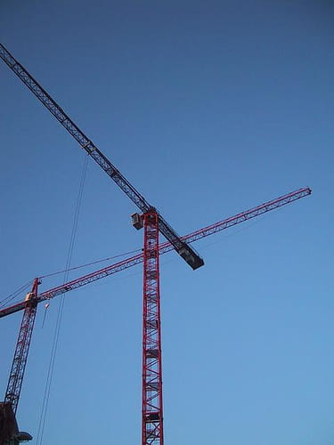

Otra de las utilidades que le encontramos al producto escalar es que nos puede ayudar a calcular el ángulo entre dos vectores. En esta parte del tema vamos a calcular el ángulo entre dos vectores cualesquiera. O bien el ejercicio contrario y que nos puede resultar más útil: encontrar un vector que forme un determinado ángulo con otro vector.
Vectores ortogonales y ortonormales
|
Dos vectores \(\vec{u}\) y \(\vec{v}\) son ortogonales si forman un ángulo de \(\pmb{90\textdegree}\) o lo que es lo mismo, si su producto escalar es cero. Además, si los dos vectores ortogonales son unitarios, se dice que los dos vectores son ortonormales. |

Ejemplo: Ángulo formado entre dos vectores
Calculemos el ángulo formado por los vectores \( \vec{u} = (3, 4, 6) \) y \( \vec{v} = (5, 4, 3) \).
1. Fórmula del producto escalar
Para hallar el ángulo \( \widehat{\vec{u}, \vec{v}} \), partimos de la fórmula del producto escalar, que relaciona las componentes de los vectores con sus módulos y el coseno del ángulo que forman:
2. Cálculo del producto escalar y los módulos
Calculamos el producto escalar multiplicando coordenada a coordenada:
A continuación, determinamos el módulo de cada vector:
\[ |\vec{v}| = \sqrt{5^2 + 4^2 + 3^2} = \sqrt{25 + 16 + 9} = \sqrt{50} \]
3. Sustitución y despeje del ángulo
Sustituimos los valores obtenidos en la fórmula principal y agrupamos las raíces multiplicando sus interiores:
\[ 49 = \sqrt{3050} \cdot \cos(\widehat{\vec{u}, \vec{v}}) \]
Despejamos \( \cos(\widehat{\vec{u}, \vec{v}}) \) y aplicamos la función arcocoseno para obtener el ángulo definitivo en la calculadora:
Vídeo
En este vídeo tienes más ejemplos de cálculo del ángulo entre dos vectores usando el producto escalar: 
3
Calculadora del ángulo que forman dos vectores
Introduce las coordenadas de los dos vectores en el espacio (\(\mathds{R}^3\)).
Selecciona
Ejercicio
|
|
Uno de los espectáculos que más celosamente se guardan en toda ceremonia de inauguración o clausura que se precie son los fuegos artificiales. Estos elementos dan el toque más visual a una fiesta a la que pone el pistoletazo de salida o el punto y final.
Estos espectáculos pirotécnicos tienen detrás un estudio científico que los sustenta que hace que cada cohete salga con la fuerza justa para llegar a un determinado punto o que los cohetes formen entre sí un ángulo concreto para que formen una figura determinada o un efecto coordinado. Este es el caso en el que nos vamos a detener.
La empresa pirotécnica Toyquexploto está diseñando un expectáculo pirotécnico. Desean formar con tres cohetes las tres puntas de un escudo en el cielo. Han hecho un diseño previo en el ordenador en el que el primer cohete partirá con una velocidad marcada por el vector \(\vec{v}=(1,1,0)\) y el segundo cohete partirá con una velocidad marcada por el vector \(\vec{u}=(4,0,0)\). Para formar los tres picos del escudo se necesita un tercer cohete que debe salir con una velocidad de \(6\) m/s formando un ángulo de \(45 \textdegree\) con cada uno de los vectores anteriores. Necesitamos que calcules el valor de la velocidad del primer y del segundo cohete y el vector velocidad del tercer cohete.
Debes tener en cuenta que \(\text{sen}(45 \textdegree)=\text{cos}(45 \textdegree)=\dfrac{\sqrt{2}}{2}\)
Ejercicio
En el mundial celebrado en el año 2010 en Sudáfrica, España se proclama campeona del mundo tras ganar a la selección de Holanda (0-1) en un partido que tuvo que llegar a la prórroga. La selección holandesa, que salió a repartir patadas y no dejar jugar, tuvo que conformarse con la segunda posición en el primer mundial ganado por la selección española. El partido se decidió por un gol marcado por Iniesta en la segunda parte de la prórroga.
Según las sensaciones de los jugadores de las distintas selecciones, el balón con el que se jugó, a veces hacía algunos extraños. Por este motivo, algunas imágenes fueron monitorizadas y estudiadas por ordenador. Concretamente, la jugada del gol español fue una de ellas. Según la cuadrícula marcada por los investigadores, Iniesta recibe el balón que sigue la trayectoria marcada por el vector \(\vec{u}=(12,-4,5)\) y lanza a portería según la trayectoria del vector \(\vec{v}=(3,5,3)\). Si el balón hubiese sido normal, el ángulo entre los dos vectores debería encontrarse entre \(31 \textdegree\) y \(93,7 \textdegree\). ¿Fue normal la trayectoria seguida por el balón?